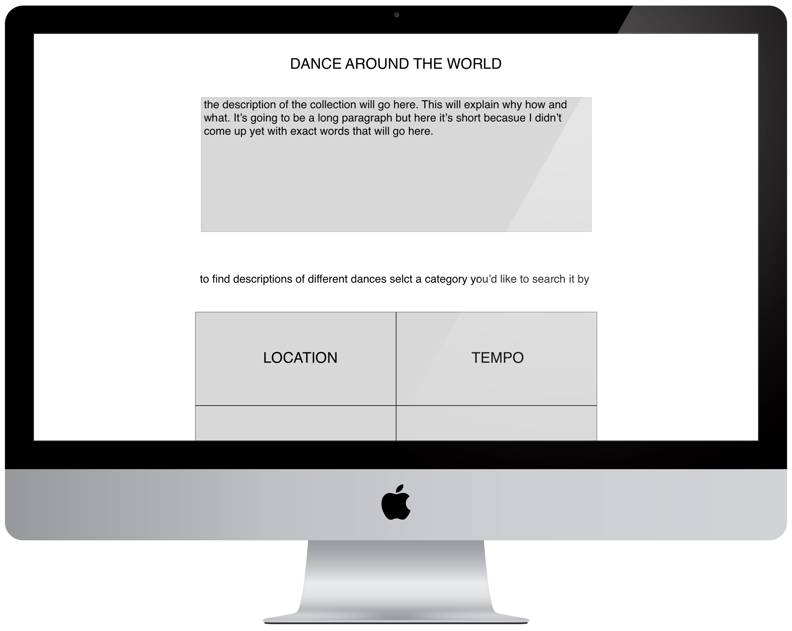
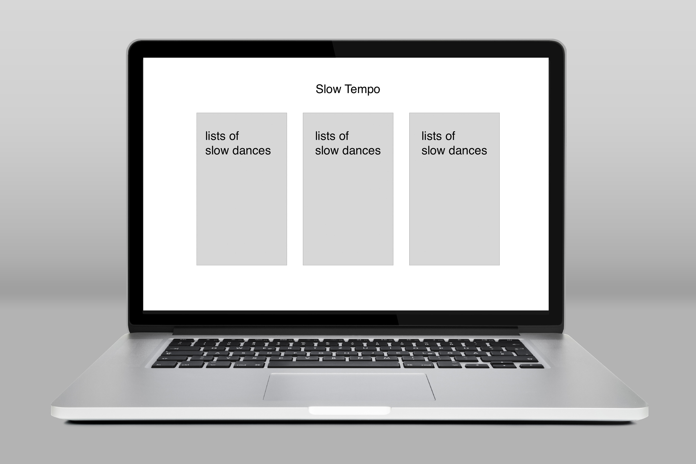
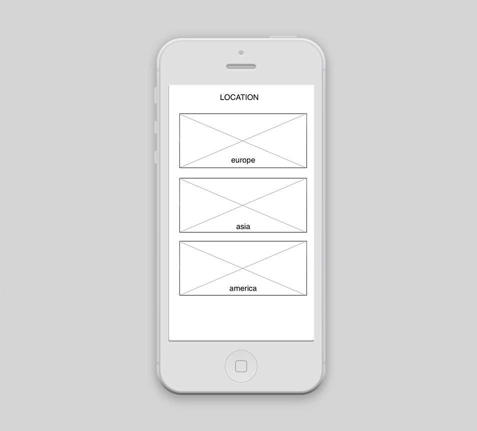

Here are my visual mockups of a wireframe I developed for my collection: Desktop and Mobile version:
  Some of this information is from the google alerts that I set and some that I found by simple Google search.
I looked into more information on importance of motion/movement in interaction design.
The first thing I found this week was the video originally posted on lynda.com and part of longer series about interaction design, but basically talks about ways people respond to motion,- Interaction design: How people respond to motion. Some of the important points mentioned in this video:
Another thing that I stumbled upon is the "Design in motion. The new frontier of interaction design" by Antonio De Pasquale where he discusses the common qualities and similar parts between Interaction and Motion.
Important points from the presentation: